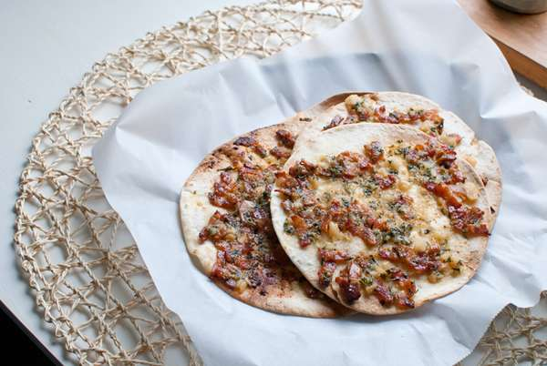

Bacon Tortilla

for 2 people
Tool
Oven(or frying pan)
time
15m
Kcal
851.5kcal
Ingredients
4 Tortilla (small size)
5 Bacon
1.5 tablespoons Chopped garlic
2 tablespoons Honey/ Any sytup
1 tablespoon Soy sauce
1 tablespoon Parsley
Pepper
2 tablespoons Butter
1 tablespoon Parmesan cheese powder
Recipe
Cut the bacon sliced as thin as possible in a slightly frozen state
Remove enough oil from the pan and fry until crunchy
Add a small amount of melted butter and chopped garlic, parmesan cheese powder, pepper, condensed milk, honey, parsley and bacon
Spread it broadly on the tortillas.
Bake at 180 degrees for about 10 minutes.
 TipIf you don’t have an oven, put oil paper or foil on the pan.and close the lid.